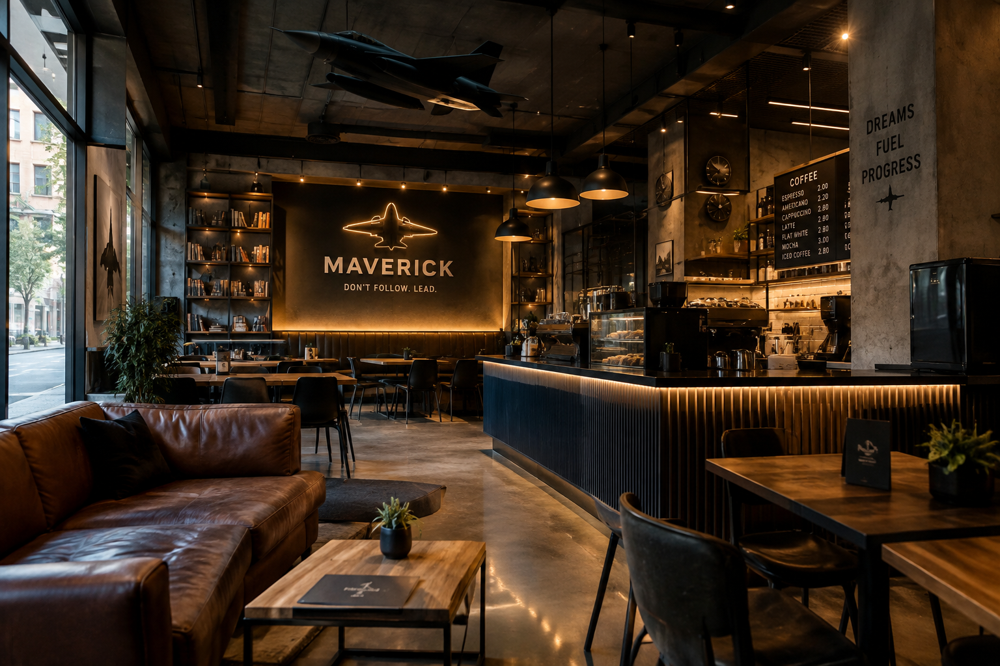

Zanima vas kada smo otvoreni? Radno vrijeme možete pogledati ovdje.
Mjesto za učenje i druženje

Povijest kafića
Kafić je originalno otvorio zrakoplovni inženjer koji je studirao na FSB-u davne 2001. godine s ciljem da se stvori ugodno i opušteno mjesto za druženje, dobru kavu i razmjenu ideja.
Tijekom godina kafić je prolazio kroz različite faze i promjene, no osnovna ideja ostala je ista biti mjesto na koje se studenti rado vraćaju. Brojne generacije studenata su gostovali na svakodnevnim druženjima i posebnim događajima koji su postali dio naše priče.
Danas kafič nastavlja svoju priču s novom atmosferom zahvaljujuci renovacijama koje su se izvele tijekom ljetnih praznika 2026.